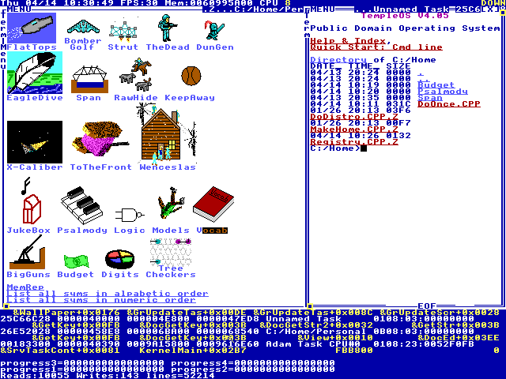
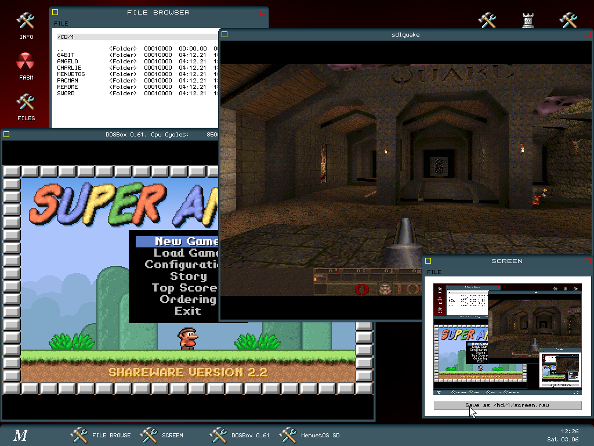
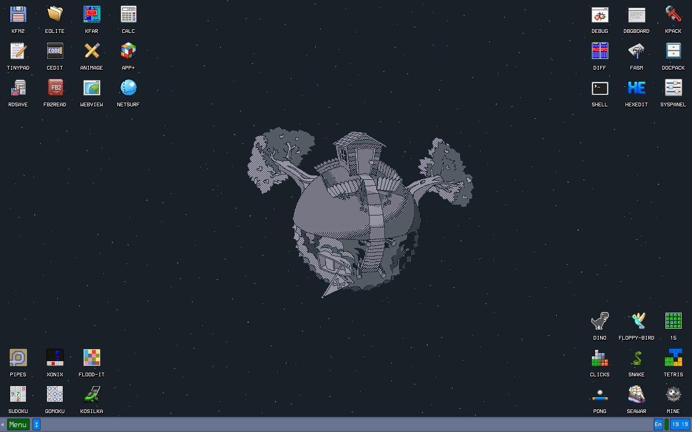
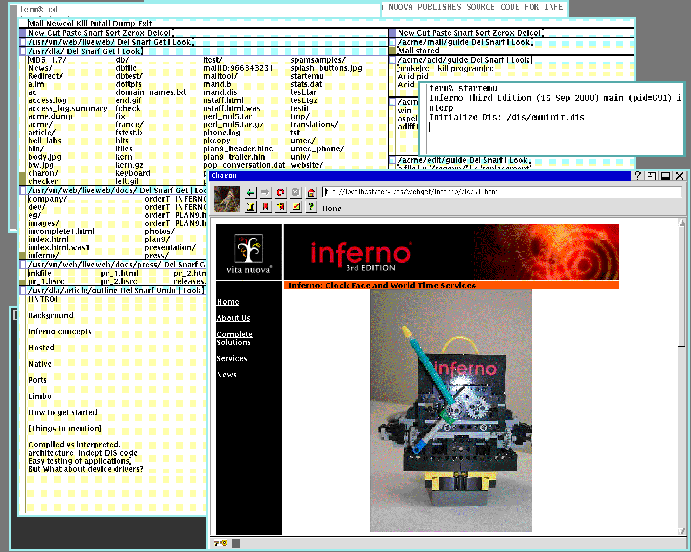
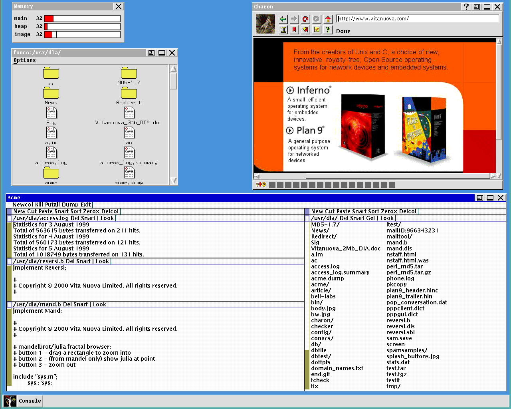
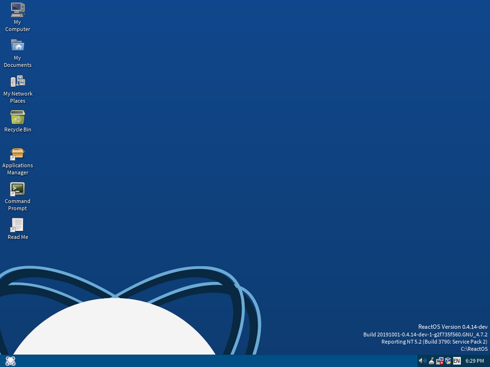
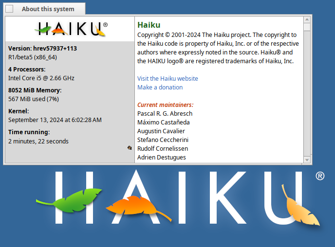
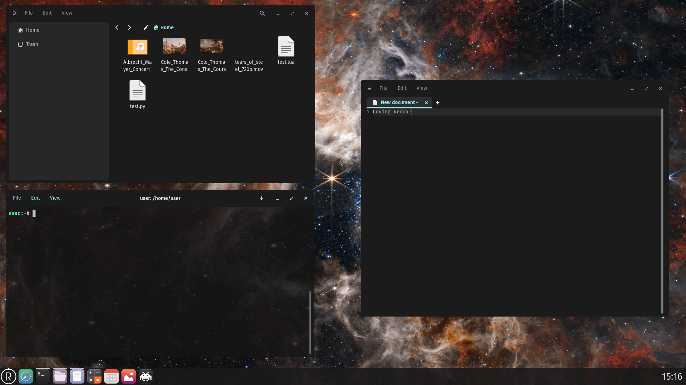
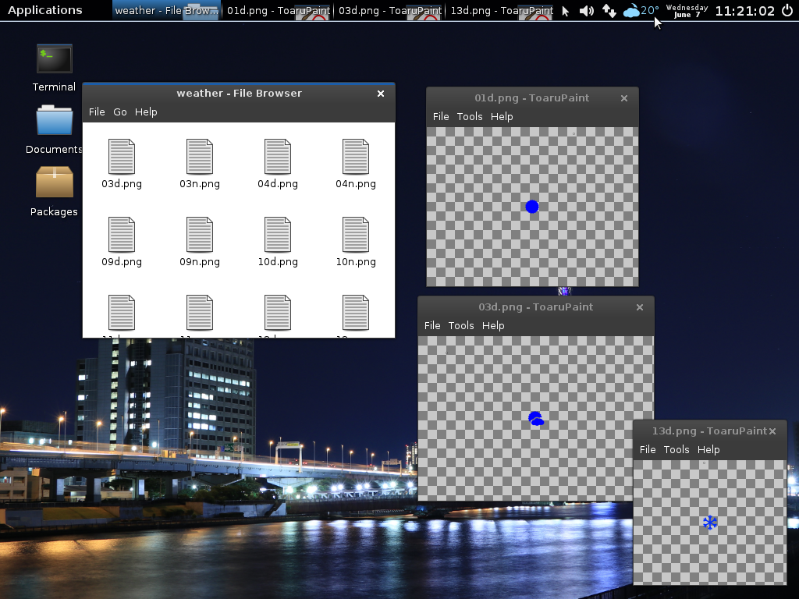
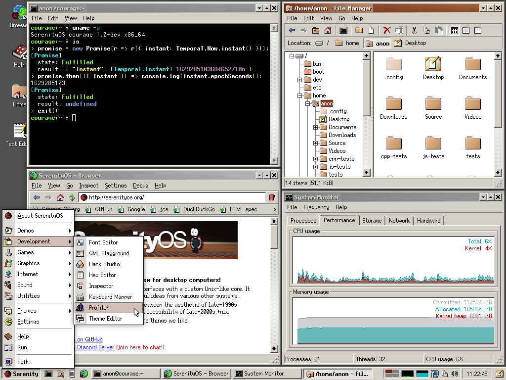

وقتی اسم سیستمعامل میآید، معمولاً ویندوز، لینوکس یا macOS به ذهنمان میرسد؛ اما در دنیای کامپیوتر پروژههایی وجود دارند که مسیر کاملاً متفاوتی را انتخاب کردهاند. بعضی از آنها برای آزمایش ایدههای تازه ساخته شدهاند، بعضی میخواهند با کمترین منابع سختافزاری اجرا شوند و بعضی حتی زبان برنامهنویسی مخصوص خودشان را دارند. در این فهرست با ۱۰ سیستمعامل آشنا میشویم که هرکدام دلیل جالبی برای بهوجودآمدن دارند و از نظر طراحی، امکانات یا زبان برنامهنویسی با سیستمعاملهای معمولی فرق میکنند.
| ردیف | نام سیستمعامل | زبان یا فناوری شاخص |
|---|---|---|
| ۱ | TempleOS | HolyC |
| ۲ | MenuetOS | Assembly / FASM |
| ۳ | KolibriOS | FASM، C و C++ |
| ۴ | Plan 9 | C و Alef در نسخههای اولیه |
| ۵ | Inferno | C و Limbo |
| ۶ | ReactOS | C و C++ |
| ۷ | Haiku | C++ |
| ۸ | Redox OS | Rust |
| ۹ | ToaruOS | عمدتاً C |
| ۱۰ | SerenityOS | C++ |

TempleOS یکی از متفاوتترین سیستمعاملهایی است که توسط یک نفر، تری دیویس، طی سالها توسعه داده شد. هدف او ساخت محیطی بسیار ساده و مستقل برای برنامهنویسی و تجربهکردن ایدههای شخصیاش بود؛ پروژه همچنین از دیدگاه مذهبی و ایدهٔ ساخت «معبد سوم» الهام گرفته بود. عجیبترین بخش آن زبان HolyC است؛ زبانی شبیه C که کامپایلر آن داخل خود سیستمعامل قرار دارد، بنابراین کاربر میتواند در محیط سیستم کد بنویسد و همانجا اجرا کند. TempleOS ابزارهایی مانند ویرایشگر کد، کامپایلر، محیط گرافیکی، کتابخانههای گرافیکی، بازیها و ابزارهای مدیریتی دارد. رابط گرافیکی آن عمداً به وضوح ۶۴۰ در ۴۸۰ و ۱۶ رنگ محدود شده و شبکه و اینترنت هم در طراحی اصلی آن جایی ندارند. در واقع این پروژه بیشتر یک دنیای کامپیوتری مستقل و شخصی است تا رقیبی معمول برای ویندوز.

MenuetOS با این ایده ساخته شد که یک سیستمعامل مستقل، سریع و کمحجم را بدون لایههای اضافی و پیچیدگیهای رایج طراحی کند. برخلاف بیشتر سیستمعاملها که بخش بزرگی از آنها با C یا C++ نوشته میشود، هستهٔ MenuetOS با زبان اسمبلی توسعه داده شده است؛ نسخهٔ ۶۴ بیتی آن بهطور ویژه با اسمبلی x86-64 و ابزار FASM ساخته میشود. این انتخاب به توسعهدهنده کنترل بسیار مستقیمی روی دستورهای پردازنده و نحوهٔ استفاده از منابع سختافزار میدهد، هرچند نوشتن و نگهداری چنین کدی دشوارتر است. MenuetOS فقط یک هستهٔ ساده نیست و محیط گرافیکی، چندوظیفگی، پشتیبانی از چند پردازنده، ابزارها، برنامههای کاربردی و امکانات شبکهای هم دارد. نسخهٔ ۶۴ بیتی آن حتی به شکل یک تصویر فلاپی حدود ۱٫۴۴ مگابایتی هم ارائه شده است. نکتهٔ جالب این است که یک محیط گرافیکی و قابل استفاده در حجمی بسیار کوچک جا شده است. البته نوشتن چنین سیستمعاملی با اسمبلی، توسعه و نگهداری آن را دشوارتر میکند.

KolibriOS از پروژهٔ MenuetOS منشعب شد و با هدف ساخت یک سیستمعامل بسیار سبک، سریع و قابل اجرا روی رایانههای قدیمی ادامه پیدا کرد. ویژگی عجیب آن اندازهٔ کوچک و وابستگی کم به منابع سختافزاری است؛ یعنی برای کارکردن به حافظه و فضای ذخیرهسازی زیادی نیاز ندارد. هسته، بسیاری از درایورها و تعداد زیادی از برنامههای آن با اسمبلی FASM نوشته شدهاند، هرچند در مخزن پروژه کدهای C و C++ هم وجود دارد. با وجود حجم کم، KolibriOS یک محیط گرافیکی پنجرهای دارد و ابزارهایی مثل مدیریت فایل، ویرایشگر متن، پخشکنندهٔ چندرسانهای، برنامههای اینترنتی، ابزارهای برنامهنویسی و بازیها را ارائه میکند. این سیستمعامل از استانداردهای مخصوص خودش استفاده میکند و کاملاً با استانداردهای POSIX یا UNIX سازگار نیست. جذابیت KolibriOS این است که نشان میدهد برای داشتن یک محیط دسکتاپ کاربردی همیشه به سختافزار قدرتمند نیاز نداریم.

Plan 9 یک سیستمعامل پژوهشی بود که از اواخر دههٔ ۱۹۸۰ در آزمایشگاه Bell توسعه پیدا کرد. سازندگان آن میخواستند بعضی مشکلات طراحی یونیکس را از پایه حل کنند، بهخصوص اینکه شبکه، دستگاهها و محیط گرافیکی در سیستمعامل به شکل یکپارچهتری کار کنند. ایدهٔ مشهور Plan 9 این است که تقریباً همهٔ منابع سیستم، از فایلها و دستگاهها گرفته تا سرویسهای شبکه، از طریق رابطی شبیه فایل در دسترس قرار بگیرند. پروتکل 9P امکان دسترسی به فایلها و منابع یک رایانهٔ دیگر را در شبکه فراهم میکند و هر پردازه هم میتواند فضای نام مخصوص خودش را داشته باشد. در این سیستم ابزارهای جالبی مانند محیط پنجرهای rio و ویرایشگر قدرتمند Acme وجود دارد. بیشتر کدهای سیستم با C نوشته شدهاند و زبان Alef هم در دورههای اولیهٔ توسعه به کار رفت. Plan 9 بیشتر از آنکه یک سیستمعامل معمولی باشد، آزمایشی بزرگ برای تصور دوبارهٔ مفهوم کامپیوترهای متصل به شبکه است.

Inferno ابتدا در آزمایشگاه Bell ساخته شد تا اجرای برنامهها و سرویسهای توزیعشده روی دستگاهها و معماریهای مختلف سادهتر شود. ایدهٔ اصلی این بود که برنامهنویس بتواند برنامهای بنویسد که به سختافزار یا سیستمعامل یک دستگاه خاص وابسته نباشد. برنامههای Inferno با زبان همزمان و مخصوص Limbo نوشته میشوند و سپس برای اجرا روی ماشین مجازی قابلحمل Dis آماده میشوند. یکی دیگر از ویژگیهای خاص آن این است که دستگاهها، سرویسهای شبکه و منابع مختلف را مانند فایل نمایش میدهد؛ به همین دلیل برنامهها میتوانند با روش مشابهی به منابع محلی یا دوردست دسترسی داشته باشند. Inferno هم میتواند مستقیماً روی بعضی سختافزارها اجرا شود و هم درون سیستمعاملهایی مانند Linux یا FreeBSD بهصورت میزبان اجرا شود. این پروژه ابزارهای شبکه، کامپایلر، کتابخانهها و برنامههای پایهٔ خودش را هم دارد. ترکیب یک سیستمعامل مستقل با محیط قابلحمل اجرای برنامهها، Inferno را به یکی از ایدههای خاص تاریخ سیستمعاملها تبدیل کرده است.

ReactOS پروژهای متنباز است که با هدف ساخت یک سیستمعامل سازگار با برنامهها و درایورهای خانوادهٔ Windows NT آغاز شد. هدف آن این است که کاربران بتوانند بدون استفاده از خود ویندوز، بسیاری از برنامههایی را که برای ویندوز نوشته شدهاند اجرا کنند. این پروژه از پایه توسعه پیدا میکند و هستهٔ لینوکس یا نسخهٔ تغییرشکلیافتهٔ ویندوز نیست؛ بلکه تلاش میکند رابطها و رفتارهای مهم معماری Windows NT را دوباره پیادهسازی کند. درون آن بخشهایی مانند هسته، زیرسیستم Win32، کتابخانهها، درایورها، ابزارهای سیستمی و محیط دسکتاپی شبیه نسخههای قدیمی ویندوز وجود دارد. بخش بزرگی از کد آن با زبانهای C و C++ نوشته شده است. البته ReactOS هنوز در مرحلهٔ آلفا و توسعهٔ فعال قرار دارد؛ بنابراین ممکن است بعضی برنامهها یا سختافزارها درست کار نکنند و بهتر است برای آزمایش در ماشین مجازی اجرا شود. ایدهٔ جالب این پروژه، بازسازی سازگاری با ویندوز بدون استفاده از کد اختصاصی خود ویندوز است.

Haiku یک سیستمعامل آزاد برای رایانههای شخصی است که با الهام از سیستمعامل قدیمی BeOS ساخته شده است. BeOS به خاطر سرعت، پاسخگویی خوب و تمرکز بر کارهای چندرسانهای شناخته میشد؛ هدف Haiku زنده نگهداشتن این ایدهها و ساخت یک سیستم مدرن با همان حس سادگی و یکپارچگی است. برخلاف توزیعهای لینوکس، Haiku از هستهٔ لینوکس استفاده نمیکند و اجزای اصلی آن بهصورت یک پروژهٔ مستقل توسعه داده میشوند. بخش بزرگی از سیستم با C++ نوشته شده و اجزایی مانند هسته، سرور گرافیکی، رابط برنامهنویسی، سیستم فایل، مدیریت فایل و برنامههای دسکتاپ را در بر میگیرد. محیط آن شامل ابزارهایی مثل Tracker برای مدیریت فایلها و Deskbar برای دسترسی به برنامهها و کنترلهای سیستم است. توسعهدهندگان تلاش میکنند ظاهر، برنامهها و اجزای مختلف سیستم از یک طراحی هماهنگ پیروی کنند. Haiku نمونهای جالب از این است که یک سیستمعامل مستقل میتواند با تمرکز بر تجربهٔ کاربری، راه متفاوتی از ویندوز و لینوکس داشته باشد.

Redox OS از سال ۲۰۱۵ با این هدف آغاز شد که نشان دهد میتوان یک سیستمعامل کامل و کاربردی را با زبان برنامهنویسی Rust ساخت. انتخاب Rust اتفاقی نیست؛ این زبان امکاناتی دارد که از بسیاری از خطاهای رایج مدیریت حافظه جلوگیری میکند و به همین دلیل برای نرمافزارهای سطح پایین و حساس مثل سیستمعامل جذاب است. Redox از معماری میکروکرنل استفاده میکند؛ یعنی بهجای قرار دادن همهٔ سرویسها در هسته، بخشهایی مانند درایورها و سرویسهای سیستم تا حد زیادی جدا از هسته اجرا میشوند. این روش با هدف بهترکردن جداسازی بخشها، امنیت و پایداری انتخاب شده است. پروژه فقط یک هسته نیست و اجزایی مانند سیستم فایل، درایورها، کتابخانههای سیستمی، ابزارهای خط فرمان و محیط گرافیکی را نیز توسعه میدهد. Redox از ایدههای سیستمعاملهایی مثل MINIX و Plan 9 الهام گرفته و میخواهد به یک جایگزین آزاد و شبیه یونیکس برای استفادهٔ روزمره تبدیل شود. نکتهٔ قابل توجه این است که Rust در این پروژه فقط برای یک برنامهٔ کوچک نیست، بلکه در قلب سیستمعامل استفاده شده است.

ToaruOS یک سیستمعامل مستقل و آزمایشی است که توسعهٔ آن در دسامبر ۲۰۱۰ آغاز شد و ریشههای آن به دانشگاه ایلینوی در اربانا-شمپین برمیگردد. هدف اولیهٔ سازندهٔ آن یادگیری عمیق مفاهیم سیستمعامل از راه ساختن یک نمونهٔ واقعی بود؛ یعنی بهجای مطالعهٔ صرف، اجزای یک سیستمعامل از بوت تا محیط دسکتاپ نوشته شوند. به همین دلیل ToaruOS فقط یک هسته نیست و اجزایی مانند بوتلودر، هسته، درایورها، کتابخانهٔ استاندارد C، لینککنندهٔ پویا، ترمینال و ابزارهای خط فرمان خودش را دارد. این پروژه همچنین یک محیط گرافیکی پنجرهای، ویرایشگر متن، برنامههای نمونه و حتی یک زبان برنامهنویسی با اجرای بایتکد را ارائه میکند. بخش عمدهٔ کد اصلی آن با زبان C نوشته شده و قسمتهای دیگری نیز از ابزارها و زبانهای مکمل استفاده میکنند. ToaruOS برای آزمایش و یادگیری بسیار جالب است و معمولاً اجرای آن در ماشین مجازی پیشنهاد میشود، چون پشتیبانی سختافزاری آن به اندازهٔ سیستمعاملهای تجاری گسترده نیست. این پروژه نشان میدهد یک سیستمعامل کامل میتواند از یک پروژهٔ آموزشی و شخصی شروع شود.

SerenityOS یک سیستمعامل گرافیکی و شبیه یونیکس است که با الهام از ظاهر نرمافزارها و رابطهای کاربری دههٔ ۱۹۹۰ ساخته شده است. هدف پروژه فقط تقلید از ظاهر قدیمی نیست؛ سازنده میخواست یک سیستمعامل کامل و مستقل بسازد که هم حس کلاسیک داشته باشد و هم امکانات فنی مدرن ارائه کند. بخش عمدهٔ سیستم با زبان C++ توسعه داده شده و شامل هستهٔ اختصاصی، محیط دسکتاپ، کتابخانهها، ابزارهای خط فرمان و مجموعهای از برنامههای کاربردی است. در محیط آن میتوان مرورگر وب، ترمینال، ویرایشگر متن، ابزارهای گرافیکی، مدیریت فایل و ابزارهای توسعه را پیدا کرد. مرورگر آن نیز فقط یک قاب ساده نیست و از فناوریهایی مانند JavaScript و WebAssembly پشتیبانی میکند. SerenityOS از صفر ساخته شده و یک پوسته یا توزیع لینوکس با تم قدیمی نیست؛ هسته و اجزای اصلی خودش را دارد. جذابیت این سیستمعامل در تضاد میان ظاهر نوستالژیک و فناوریهای مدرن درون آن است.